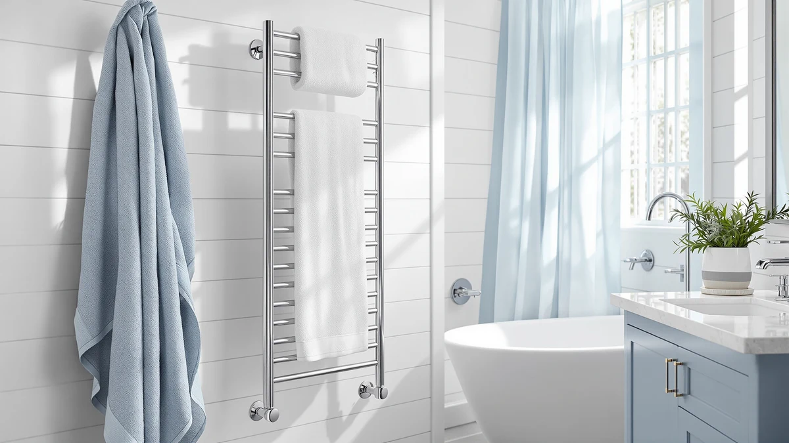

Best Plug in Heated Towel Racks of 2026: 7 Top Picks
Prices and picks verified as of July 2026. Independent, reader-supported reviews.


Quick Answer
The ENZE Smart Rotating Heated Towel is the best plug-in heated towel rack for most bathrooms. It mounts on the wall, runs off a standard outlet, and its rotating stainless steel arms plus top shelf handle more towels in 17.7 by 26.8 inches than anything else we compared. If drilling is off the table, the $79.99 AAOBOSI bucket warmer covers you.
Our pick: ENZE Smart Rotating Heated Towel, $159.99 Check Price on Amazon
Bottom line: our top pick is the ENZE Smart Rotating Heated Towel Rack for Bathroom at $159.99. The best budget option is the Demissle 24 Pcs Replacement Fragrance Scented Pads Disc Fresh at $9.99.
Things to Know Before You Buy
- No wiring work. A plug-in heated towel rack runs off a standard 120V bathroom outlet, so each pick in this guide skips the electrician a hardwired rack demands.
- Racks and buckets solve the same problem differently. A wall rack warms and stores towels as a fixture, while a bucket warms a folded towel anywhere with an outlet and moves out of sight when you want the counter back.
- Measure before you buy. The ENZE needs a clear 17.7 by 26.8 inch stretch of wall, and the larger buckets claim real counter or floor space.
- Budget runs from $9.99 to $159.99. The warmers themselves cost $79.99 to $159.99, and the fragrance discs at $9.99 make sense as add-ons rather than standalone buys.
- Fragrance discs need a compatible warmer. The Demissle and SereneLife discs slot into bucket-style warmers to scent the towel while it heats; on their own they do nothing.
The best plug-in heated towel racks fix the worst moment of a winter morning, the reach for a towel that went cold and clammy on the bar overnight. They run off the outlet you already have, which means no electrician visit and no hole cut in the drywall for a junction box. We compared seven models for this 2026 guide, and the ENZE Smart Rotating Heated Towel took the top spot at $159.99.
The category splits into two shapes. Wall-mounted racks like the ENZE hold towels on heated stainless steel arms and double as storage, while countertop buckets like the AAOBOSI and the Di’Aroma warm a folded towel inside an insulated drum and move wherever you carry them. Both shapes plug into a standard outlet, and both earned spots in this guide, because the right one depends on whether you can drill into your walls.
Below the top pick you will find the $79.99 AAOBOSI for tight budgets, the $129.99 KEG for anyone who wants a WiFi schedule, the Di’Aroma and the SereneLife rectangle bucket at $99.99 each, and two fragrance disc packs at $9.99 that turn a bucket warmer into a scent diffuser. We explain how we picked, how we compared them, and where each one falls short.
Why You Should Trust Us
I’m Ilane Tall, and I run Best Towel Warmers, where I cover this category full time. I track prices, spec sheets, and owner feedback for the plug-in heated towel racks and bucket warmers sold on Amazon, and I update guides like this one when a price moves or a model disappears from the market. I have no relationship with any brand in this guide. We earn a commission if you buy through our links, and that commission has no say in which product wins. The rankings below come from the comparison work described in the next two sections, and I flag the flaws in each pick as plainly as the strengths.
How We Picked
We started with the plug-in requirement: a model had to run off a standard household outlet with no wiring work, or it was out. That single filter removed the hardwired half of the market. From there we required stainless steel construction, since plated steel corrodes in bathroom humidity, and owner ratings of 4 stars or better on Amazon.
Then we balanced the shortlist across use cases. A wall-mounted plug-in heated towel rack like the ENZE suits a permanent setup, buckets like the AAOBOSI and Di’Aroma suit renters, and the KEG covers the smart-home crowd. We capped the field at $159.99, because past that price you are shopping hardwired territory, and we added the two fragrance disc packs because bucket owners keep asking about them.
How We Compared
We compared the seven finalists against their own listings and against each other. For each one we checked the published footprint against the wall or counter space it needs in a working bathroom, mapped where the cord has to reach relative to a GFCI outlet, and worked out cost per use where the math exists, like the Demissle discs landing near 40 cents each.
We also read owner feedback on each listing and weighted repeated complaints over one-off gripes. Finally we weighed each control scheme on daily friction: the ENZE’s rotating arms, the KEG’s WiFi app, and the plain switches on the buckets. A plug-in heated towel rack earns its spot here by doing its one job with no installation surprises.
Our Picks

ENZE Smart Rotating Heated Towel
What we like
- Rotating arms swing out to load and fold flat when you finish
- Top shelf stages the next towel while one warms
- Stainless steel construction stands up to bathroom humidity
- Runs off a standard outlet despite the built-in look
Flaws but not dealbreakers
- Highest price in the guide at $159.99
- Needs 17.7 by 26.8 inches of clear wall plus drilling
- Smart features add setup time a plain switch avoids
| Material | Stainless steel |
| Size | 17.7" x 26.8" (With Shelf) |
The ENZE earns the top spot by acting like a permanent fixture while installing like an appliance. Its rotating stainless steel arms swing away from the wall when you load towels and fold flat once you finish, and the shelf across the top holds the folded ones waiting their turn. The whole unit covers 17.7 by 26.8 inches of wall and plugs into a normal outlet, so you get the look of a hardwired install without opening the drywall or paying an electrician to close it back up.
The flaws sit where you would expect on the priciest pick in the guide. At $159.99 it costs twice the AAOBOSI, you still have to drill mounting anchors, and the smart controls take more setup than the one-switch buckets below. None of that changed the ranking for us. If you warm towels most mornings, the ENZE is the plug-in heated towel rack that treats the habit as permanent instead of occasional.

AAOBOSI Towel Warmers for Bathroom
What we like
- Lowest warmer price in the guide at $79.99
- Zero installation, you plug it in and load a towel
- Stainless steel drum shrugs off daily humidity
- Light enough to move between bathrooms or out to a hot tub
Flaws but not dealbreakers
- Warms folded towels one batch at a time
- Claims permanent counter or floor space while in use
| Material | Stainless steel |
| Size | Luxury Towel Warmer |
The AAOBOSI answers the objection most shoppers raise against the ENZE: the drill. It is a stainless steel bucket that warms a folded towel from any standard outlet, and installation means finding a clear patch of counter. At $79.99 it undercuts the other full warmers in this guide by $20 or more, and it travels to a guest bathroom or a hot tub deck as easily as a kettle.
You trade capacity and tidiness for that freedom. A bucket warms what fits inside, so a bath sheet needs a tight fold, and the drum sits in view on the counter rather than disappearing against a wall. If you own your home and heat towels for the whole family, the wall-mounted ENZE remains the stronger plug-in heated towel rack. If you rent, the AAOBOSI is the pick, and the price difference buys a lot of fragrance discs.

KEG Smart WiFi Towel Warmer
What we like
- WiFi app starts or schedules warming from anywhere in the house
- Stainless steel build matches the pricier picks
- $30 cheaper than the ENZE if wall mounting is off the table
Flaws but not dealbreakers
- App pairing and your home network sit between you and a warm towel
- Costs $50 more than the AAOBOSI for the connectivity
| Material | Stainless steel |
| Size | Wifi Version |
The KEG makes the case for a connected warmer better than we expected. Set a schedule from bed the night before and the towel reaches temperature while you shower, with no trip across a cold floor to press a button. At $129.99 it lands between the AAOBOSI and the ENZE, and it shares the stainless steel construction of both, so the extra money buys the app rather than a downgrade in hardware.
The connectivity cuts both ways. Pairing the app takes patience, and a flaky home network turns a smart warmer into a plain one until the router cooperates. You also pay $50 over the AAOBOSI for scheduling that a fixed morning routine may never touch. Buy the KEG if the schedule is the point of a plug-in towel warmer for you. If a plain switch would do the same job, keep the $50.

Di’Aroma Luxury Towel Warmer Bucket
What we like
- Large drum takes bath sheets and robes without a tight fold
- Stainless steel interior wipes clean in seconds
- Nothing to pair, update, or troubleshoot
Flaws but not dealbreakers
- Costs $20 more than the AAOBOSI
- Bulky to store between uses
| Material | Stainless steel |
| Size | Large |
The Di’Aroma exists for the towels the other buckets turn away. Its large stainless steel drum takes a full bath sheet, a robe, or a throw blanket without the origami a smaller warmer demands, and at $99.99 it stays under both smart picks in this guide. Operation is basic in the good sense: load it, switch it on, and collect a warm towel, with no app between you and the result.
Size doubles as the complaint. The drum claims real floor or counter space while it works, and stashing it between uses takes a closet shelf you may not have free. It also costs $20 more than the AAOBOSI, which warms standard towels equally well from the same kind of outlet. If bath sheets and robes drive the purchase, the Di’Aroma is the bucket to get. Otherwise the AAOBOSI does the same job for $20 less.

SereneLife Luxury Rectangle Towel Warmer
What we like
- Rectangular footprint sits flush against a wall or backsplash
- Stainless steel build at a mid-range $99.99
- Takes the SereneLife fragrance discs featured below
Flaws but not dealbreakers
- The listing publishes no exact dimensions, so measure conservatively
- Same $99.99 price as the larger Di’Aroma
| Material | Stainless steel |
| Size | — |
Round buckets waste the corners of whatever rectangle they sit in, and the SereneLife fixes that with a squared-off case that slides flush against a backsplash or wall. It warms folded towels the same way the drums above do, runs off the same standard outlet, and lands at $99.99 with the stainless steel build the rest of the field carries. On a narrow vanity, the shape is the feature.
We kept it out of the top spots for two reasons. SereneLife publishes no exact dimensions on the listing, so you are estimating from photos before it ships, and it matches the $99.99 price of the Di’Aroma while holding less. It stays in this plug-in towel warmer guide because the shape solves a real placement problem, and because it pairs with the SereneLife fragrance discs two picks down.

Demissle 24 Pcs Replacement Fragrance
What we like
- 24 discs for $9.99 works out near 40 cents each
- Drops straight into the disc slot of bucket-style warmers
- One pack covers months of regular use
Flaws but not dealbreakers
- Does nothing without a warmer that accepts discs
- Scent strength is a matter of taste, so try one pack first
| Material | Stainless steel |
| Size | 24 Count (Pack of 1) |
The Demissle pack is the cheapest way in this guide to change what a plug-in towel warmer does. Drop a disc into the slot on a bucket warmer and the heat that warms your towel also carries the scent into it, spa-style, with no extra device on the counter. At $9.99 for 24 discs, each warm-up cycle with fragrance costs about 40 cents.
Keep the expectations accessory-sized. The discs do nothing on their own; they ride along inside a warmer you already own, and that warmer needs a disc slot to begin with. Fragrance preference also varies from person to person, so start with a single $9.99 pack before you stock a drawer. As add-ons go, the cost of finding out stays under ten dollars.

SereneLife Fragrance Disc 15 Fragrant
What we like
- Brand-matched fit for SereneLife towel warmers
- 15 discs for $9.99 keeps each refill around 67 cents
- Swaps in and out in seconds
Flaws but not dealbreakers
- Nine fewer discs than the Demissle pack at the same $9.99
- An accessory, worthwhile only alongside a compatible warmer
| Material | Stainless steel |
| Size | 1 Count (Pack of 15) |
SereneLife sells these discs for its own warmers, including the rectangle bucket earlier in this guide, and the brand match is the reason to choose them. The disc fits the tray it was designed for, with no trimming and no guesswork about compatibility, and a 15-pack at $9.99 keeps each refill around 67 cents. If you bought the SereneLife rectangle, this is the companion purchase.
The math favors Demissle when your warmer takes generic discs, since the same $9.99 buys 24 of those against 15 here. Buy the SereneLife pack for the guaranteed fit with a matching unit, and buy the bigger pack when compatibility is loose. Either way, treat fragrance discs as the finishing touch on a plug-in heated towel setup rather than the reason to buy one.
Quick Comparison
| Product | Material | Price | Rating | Best for | Get it |
|---|---|---|---|---|---|
| ENZE Smart Rotating Heated Towel | Stainless steel | $159.99 | 4 | Daily use, permanent wall install | View on Amazon → |
| AAOBOSI Towel Warmers for Bathroom | Stainless steel | $79.99 | 4 | Renters, no-drill setups | View on Amazon → |
| KEG Smart WiFi Towel Warmer | Stainless steel | $129.99 | 4 | Phone-scheduled warming | View on Amazon → |
| Di’Aroma Luxury Towel Warmer Bucket | Stainless steel | $99.99 | 4 | Bath sheets and robes | View on Amazon → |
| SereneLife Luxury Rectangle Towel Warmer | Stainless steel | $99.99 | 4 | Tight counters and shelves | View on Amazon → |
| Demissle 24 Pcs Replacement Fragrance | Stainless steel | $9.99 | 4 | Scent refills, generic warmers | View on Amazon → |
| SereneLife Fragrance Disc 15 Fragrant | Stainless steel | $9.99 | 4 | Scent refills, SereneLife warmers | View on Amazon → |
Do plug-in heated towel racks need special wiring?
No.
Should I buy a wall rack or a bucket-style towel warmer?
Choose the wall-mounted ENZE if you warm towels daily and can commit to drilling; it holds more and stays out of the way.
The Competition
We cut hardwired towel racks first. They heat well and look built-in because they are, but they require an electrician and an in-wall junction box, and this guide exists for shoppers who want to plug something into an outlet and be done the same afternoon. If you own your walls and want a permanent circuit, our wall-mounted and hardwired guides cover that side of the market.
We also passed on the wave of unbranded bucket warmers that undercut the AAOBOSI by a few dollars. Their listings tend to omit dimensions, materials, or both, and a heating appliance that lives in a humid room is the wrong place to gamble on a blank spec sheet. Warming drawers fell out for a different reason: they solve a laundry-room problem at a laundry-room price, and they belong in their own comparison.
That leaves the seven picks above. The ENZE Smart Rotating Heated Towel is the best plug-in heated towel rack of 2026 for most bathrooms, the AAOBOSI is the one to grab under $80, and the KEG earns its spot when you want the towel warm before your alarm goes off.